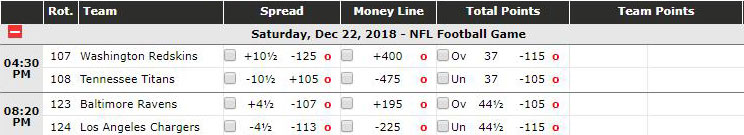
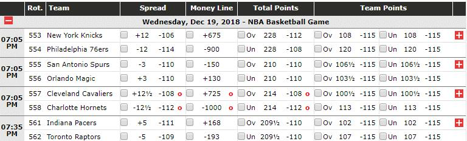
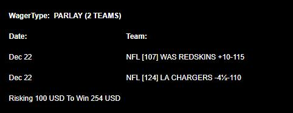
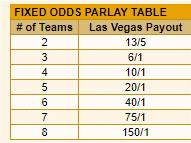
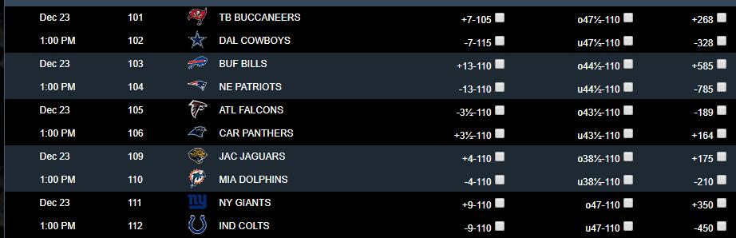
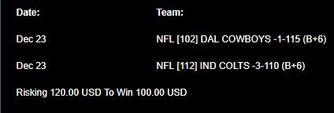
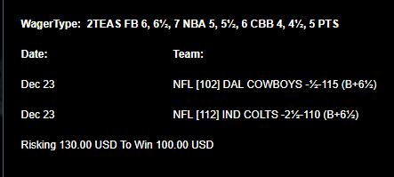
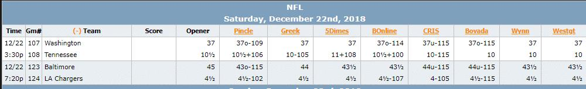

With the growing legalization of sports betting across the US, the world is changing around us. Now isn’t the time to miss out just because sports betting is slightly different than your fantasy leagues, or the verbiage is a bit confusing. In this column we will walk through the basics of betting and include examples from different sports so it’s easy to understand and master the basic concepts.
Let’s start by using these matchups as our primary examples:

Moneyline: Betting on a “moneyline” means you are taking a team to win the game. It can happen in regulation or overtime but as long as your team wins, you will win the bet. This is the simplest way to bet as you are just picking the winner.
What do the numbers mean? Regardless of how much you are betting, it’s easier to scale everything to a $100 bet.
So, for example, the Chargers are -225 favorites to win the game. This means that for you to profit $100, you have to risk $225. In the other game, the Titans are -475 favorites. This would mean you have to risk $475 to profit $100.
Looking at the underdogs in these scenarios, the Ravens are +195 on the moneyline. This means that if you risk $100, you would profit $195 if they win. The Redskins are even heavier underdogs and are +400 on the moneyline. This means if you bet $100 you would profit $400.
But why is there a difference between the favorites moneyline and the underdogs? For example, if you bet the same unit size on both teams you either come out even or behind.
$475 to win $100 on the Titans Moneyline (-475)
$100 to win $400 on the Redskins Moneyline (+400)
If the Titans win, you break even, if the Redskins win you lose $75. This is called the “Vig.” It’s one of the ways Sportsbooks tilt the odds in their favor and make money.
Spread: This is the most common type of bet and means that you are taking a team to outperform the Sportsbooks’ projection and betting market. Sportsbooks set a projected “spread” of the game based on what their statistical models believe and how the market has been betting it.
Using the same examples as above, the Chargers are -4.5 (4.5-point favorites) over the Ravens. This means, for your bet against the spread (Commonly referred to as “ATS”) to win, the Chargers have to win by five points or more. If they win by four points or less, or lose, you would lose that bet.
Side Note: Sportsbooks like to set lines at half of a point so that there can’t be a “push” or tie. If that does happen and it lands exactly on that number, you get your money back.
Looking at the underdogs, the Redskins are +10.5 on the spread (10.5-point underdogs), meaning they would have to lose by 10 or less in order for your bet to cash.
The Titans are 4.5-point underdogs, meaning they would have to lose by four points or less in order to win.
That’s not all though. Betting on the spread isn’t just an even money bet where you risk $100 to profit $100. Most frequently sportsbooks will put a -110 moneyline on the spread, also known as the “juice.” This means that if you want to bet on a team against the spread you would have to risk $110 to profit $100. (See moneyline section above for more detailed explanation if needed).
In the specific examples above, the Chargers spread carries a -113 moneyline. So, for you to bet on the Chargers at -4.5 you would have to risk $113 to profit $100.
Totals: Just like how Sportsbook’s create spreads, they also create “Totals.” A “total” is the combined amount of points scored in a game between the two teams.

Looking at a handful of NBA matchups, you can see the “Total Points” column. For the Knicks vs 76ers game, sportsbooks suggest a total of 228 combined points will be scored. Depending on your thoughts/research you can bet the under or over that total. Just like a bet against the spread, betting on a total also carries a moneyline. So, if you want to bet the Knicks-76ers going over it’s total, you would have to risk $112 to profit $100. If you want to bet the under, you would risk $108 to profit $100.
Team Totals: Bets on “Team Totals” take it a step further. Using the “Spread” and “Total” sportsbooks’ generated, each team is projected to score a certain amount of points. Most books will offer the ability to bet on those individual team projections, otherwise known as Team Totals. For example, the Pacers are projected to score total of 102 points. If you want to be on either the under or over, you would have to risk $115 to win $100.
As you try to bet on more granular ideas, sportsbooks tend to raise the moneyline on both sides. This something to watch out for over time as if you are trying to be a profitable long-term bettor, taking bets with a lot of juice can severely limit your profitability.
Parlay: A “Parlay” is when you bet on multiple spreads or totals at the same time. All of them have to win in order to win your parlay. The more bets you place in the parlay, the higher the payout. If just one bet loses though, you don’t win anything. Using our example from earlier, say you think both the Redskins and Chargers cover the spread (THIS IS NOT A REAL BET I MADE). Parlaying them would give you a payout of $254 on a $100 bet.

The multiplier also increases as you add more bets to the parlay. See below for a basic parlay calculator payout chart. Parlays are generally something profitable long-term bettors avoid, but for those just looking to have a good time, there is nothing like the sweat on the last leg of a parlay.

Teaser: A “teaser” involves manipulating a spread or total toward teams you want to bet on. Similar to a parlay though, all bets of the “teaser” need to win in order for you to win. The most common teasers involve two teams, but you can include more if desired.
Football Example: (Teams are generally “teased” by 6, 6.5, or 7 points)


The first picture is what the regular odds are if you want to place a bet on an individual spread, total, or moneyline. The second is what the odds look like when doing a 6-point teaser. The Cowboys were 7-point home favorites against the Buccaneers while the Colts were 9-point home favorites against the Giants. A “teaser” allows a better to add 6, 6.5, or 7 points toward their side of the spread.
Cowboys: 7 (original spread) — 6-point teaser = 1-point favorites
Colts: 9 (original spread) – 6-point teaser = 3-point favorites
The catch is as you add more points, the moneyline gets heavier. So, for a 6-point teaser you would have to risk $120 to profit $100.

If you “Buy” half a point, notice the moneyline went from -120, to -130. While you are risking more it may help your bet get through “Key Numbers.”
Those enthralled by teasers like to try and grab teams who will be “teased” through key numbers. So, in the NFL those numbers are 3, 4, 6, 7, 10, and 14. They are “Key” because they are the most frequently landed on win margins.
The NBA and CBB both have different teaser numbers. The NBA uses 5, 5.5, or 6-point teasers as their base and CBB is even lower with 4, 4.5, and 5-point teasers.
Pleaser: A pleaser is the opposite of a teaser. Instead of getting points toward your teams spread or total, it moves away from your team. The reason people do this is because you get very good odds if you win. A 6-point pleaser involving two teams would land you +600 or 6-to-1 odds if you win. Just like teasers and parlays though, all parts of the bet need to win otherwise you lose everything, no partial credit.
Props: “Props” are a way to bet on more specific events to happen. The easiest example are player props. You can bet on which player you think will score the first touchdown. Because there are so many options you will likely get 2-to-1 or better odds.
Sportsbooks also set player totals, such as Julian Edelman over/under 6.5 receptions. For those looking to get into betting from the fantasy world, this is the easiest way to get into the gambling world. Player props also happen to not be as accurate because Sportsbooks aren’t able to spend as much time creating/adjusting them. These carry lower limits, but that shouldn’t be too much of an issue if you are just starting out.
Beyond player props, sportsbooks will set lines of “When will the first score be,” “Total combined sacks,” etc. In the Super Bowl, people most notably bet on the coin toss, but you can also gamble on the color of the winning team’s Gatorade, the color of the performer’s hair and many other wild ideas. If there is something you want to bet on, there’s a very good chance you can.
Futures: A future is a bet placed multiple weeks prior to the event occurring. So, for example, betting on a team to win the Super Bowl would qualify as a future. Prior to the season one of my futures was the Rams to win the Super Bowl at 11/1 (+1100). At the moment, it looks good as the current “futures” market has the Rams at 4/1 (+400).
Prior to a leagues season, Sportsbooks will also create a list of season-long win totals for people to bet on. These are considered futures.
For example: The Colts win total Over/Under was set at 6.5 for most of the offseason with -110 juice on both sides. These Over/Under can move if they see a large amount of money or a serious event happens. For example, the Raiders opened the offseason with a win total of 8.5 but went into the regular season with a win total of 7.5 after trading Khalil Mack.
Miscellaneous
Unit sizing: This is really important for those who are trying to make money over a long period of time. A “Unit” is the standard size bet you make in terms of dollars. So, if your unit size is $100, you should be putting $100 on nearly all of your bets. It’s generally anywhere from 1-5 percent of your starting bankroll. This helps to keep a bettor consistent.
Where to begin: Now that you understand the basics, where do you start betting? Sugarhouse has a really great opening offer where they will match your original deposit up to $250 and give you a free play. Taking advantage of introductory offers like this are always a good way to get started and build a bankroll.
It’s also important to have access to multiple sportsbooks in order to “shop lines” since they will vary across the industry.

For example, if you want to bet on Tennessee against the spread, you would look to take them at the Greek as 10 point favorites with a -105 moneyline. These are the best odds among a number of books for that side. If you want to bet on Washington, you can grab them at 11-point underdogs online at 5Dimes. While this difference may not seem like a lot, you would be surprised at how frequently a game can come down to half a point.
Betting Tool: Now that you know the lingo and where to bet, it’s important not to dive in head first without doing any research. Here at TheQuantEdge.com we not only have multiple analysts for the NFL and NBA grinding to find their favorite bets, but each sport has its own betting tool. Each sports betting tool uses in-depth statistical models to produce a lean on every game, spread, and total based on a number of factors. All of our models have also been back-tested for thousands of games, something that helps to show it’s predictive rather than descriptive nature.
If you still have any questions, don’t hesitate to reach out on Twitter @ConnorAllenNFL. Happy Betting!